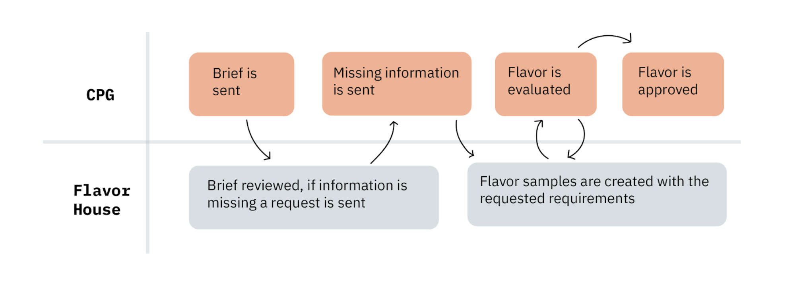

Giuseppe Flora
Project Management Front-end Back-end UX/UIFlora is one of the four modules that make up the Giuseppe Platform. Its main objective is to serve as a communication channel between Flavor Houses and consumer packaged goods companies (CPGs) and to work as a recommendation tool to achieve the desired flavors faster within set restrictions and requirements.
Roles
Project Management: I was in charge of managing the Flora Module for over a year. For this specific rol I had to lead bi-weekly standups, organize quarterly plannings, set goals and OKRs for the platform, communicate with different stakeholders, raise requirements and feature requests from users, and manage a small team. This experience allowed me to acquire and enhance a wide range of skills, including organization, communication, and planning.
Front-end Development: I was part of the project since its beginning, which meant I had to handle a lot of front-end tasks. We used VueJS with Vuetify as our go-to component library. During my involvement, I created complex views and features to meet the platform's goals. Since I've been coding from the project's minimal viable product (MVP) stage, I've had the opportunity to witness the module's growth and actively contributed to making the code more manageable and adaptable through various initiatives.
Back-end Development: To drive platform expansion, we undertook the creation of numerous models designed for both logical coherence and scalability in our development efforts. My responsibilities included crafting multiple such models and overseeing their interactions, with a constant eye on ensuring the future scalability of our databases. For our back-end development I had to use Django and GraphQL.
UX & UI: Leveraging my background in Engineering design and ethnographic studies, I assumed various UX responsibilities. My role involved identifying user requirements, constraints, and pain points and translating them into actionable features. This entailed conducting a multitude of user interviews, both externally and internally, along with platform user testing. Additionally, I created UI wireframes and prototypes to enhance the overall user experience and have gidelines for our front-end development.
Context
Flavor houses and consumer packaged goods (CPGs) companies work together in the food industry to create innovative products that appeal to consumers. Flavor houses are companies that specialize in creating unique flavors and fragrances for a variety of industries, including food, beverage, beauty, and cleaning. They work closely with CPGs companies, which are responsible for creating and selling packaged goods to consumers. CPGs rely on flavor houses to provide them with unique and high-quality flavors that can differentiate their products from competitors. Flavor houses use a combination of science, technology, and creativity to develop flavors that meet the specific needs and preferences of CPGs and their target products. The process to create flavors is a very iterative one, and it’s length depends on the complexity of the requested flavors. Many times CPGs might rely on many flavor houses to achieve the desired flavor since they can provide different notes to achieve the target end product.
Flavor creation process
To achieve the desired flavors it is very important to have a descriptive and detailed feedback process, since flavor houses need to know what notes they are missing. The process of iterating a flavor be different from project to project, but some general outlines include:
Sometimes the flavor house might ask for the flavor house to send them the base they are using to try the flavor in a more realistic context at the beginning of the process. Also, sometimes flavor houses organize workshops with the CPG developers so they can reach the desired flavor more quickly with direct feedback and on-the-spot development.
A flavor house might send a complete flavor or a batch of different flavors and maskers that CPG developers can mix in different dosages. The chosen method depends on the project and flavor house.
Problem
The process to achieve the perfect flavor can be very long and iterative. This happens because flavor evaluations and communication can be slow and sometimes vague. CPG users want to communicate with flavor houses to achieve their desired flavor as fast as possible, while flavor houses need to get detailed information on what the CPG is looking for and where they are applying the flavor to replicate the request. Flavor house also need detailed feedback to understand what notes they are missing and how to improve their flavors to meet their client’s needs. Currently Flora tries to solve that problem by having different sections in its e-Briefs to cover these needs
Platform
The Flora module has Four main parts, bellow you can see the first mockups to gide its innitial development.
- Project description: This section contains all the relevant information about the project in development. It has different sections with relevant target information, restrictions, formats, allergens and product requierements.
- Ai Recommenders: Contains AI recommendation based on the compound structure of each target and base.
- GCMS Analysis: Contains the GCMS analysis information of targets and food matrices, as well as comparison tools to identify missing compounds.
- Communication & Feedback: This section contains all the communication between Flavor Houses and CPGs. The main goal is to have a standardized feedback process and keep track of the different samples sent.


Giuseppe Biagio
Front-end Back-endBiagio is a versatile module that facilitates project tracking and documentation as well as fuels AI innovation in formula creation. The app has been refined to optimize workflow efficiency and adapt to a wide array of needs. Currently, the platform plays a pivotal role in project oversight, recipe generation, and the comprehensive documentation of innovative products. This underscores the software team's ongoing commitment to improving existing features and developing new functionalities, driven by a profound understanding of user workflows.
Roles & Projects
Front-end Development: At the beginning Biagio's front-end components were all custom made. My initial tasks centered either on creating whole pages or custom components (buttons, sliders, dropdowns, etc). We later decided to add a component library to handle the atomic components to speed our development. In this I was in charge of refactoring our old pages to use the new vuetify components. Some other recent tasks included adding a new chat frontend for an ingredient recommender and formula creator AI LLM.
Back-end Development: To drive platform expansion, we undertook the creation of numerous models designed for both logical coherence and scalability in our development efforts. My responsibilities included crafting multiple such models and overseeing their interactions, with a constant eye on ensuring the future scalability of our databases. For our back-end development I had to use Django and GraphQL.